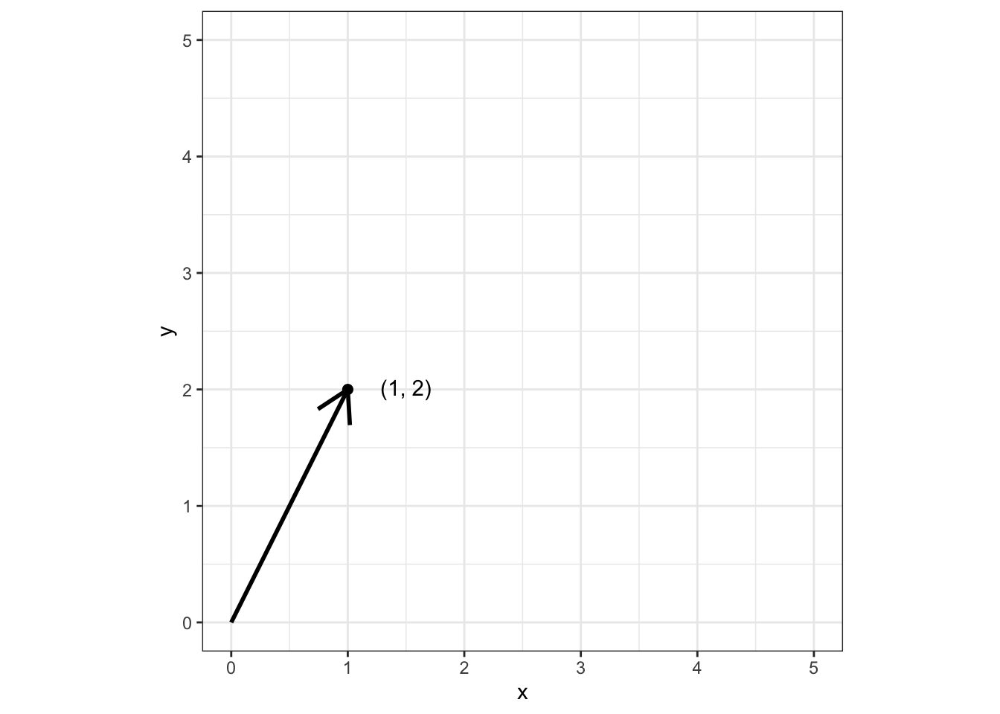
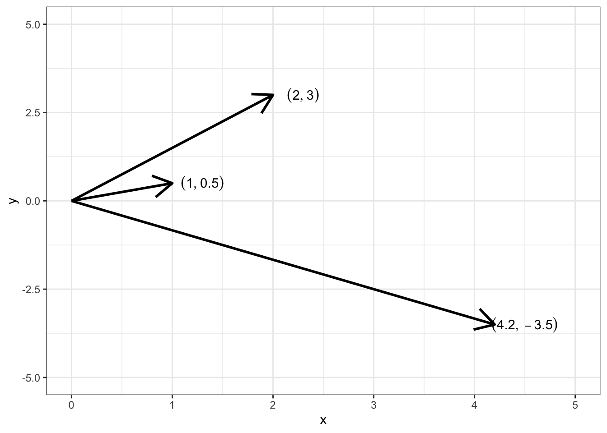
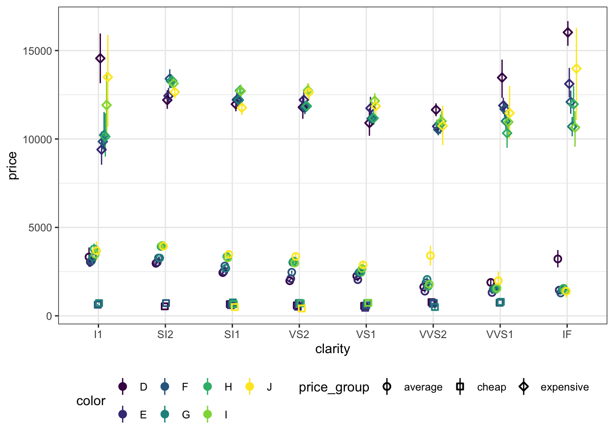
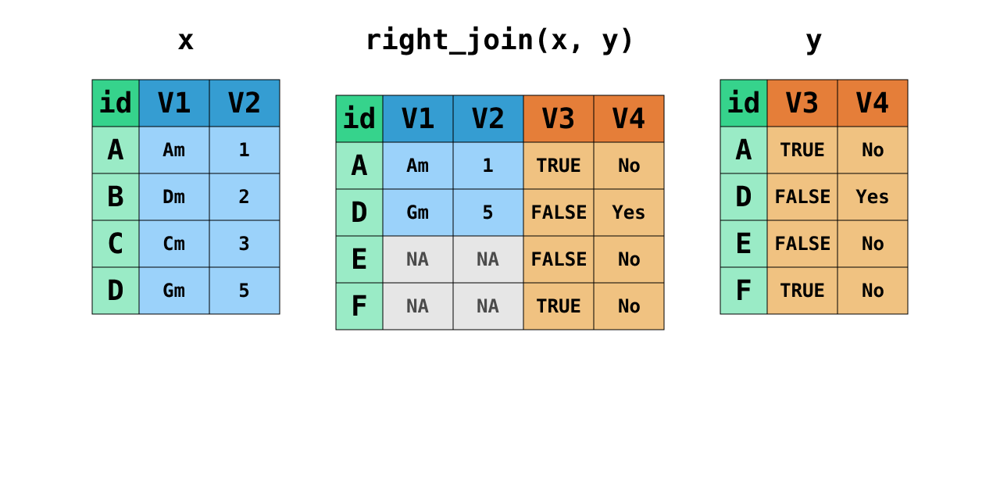
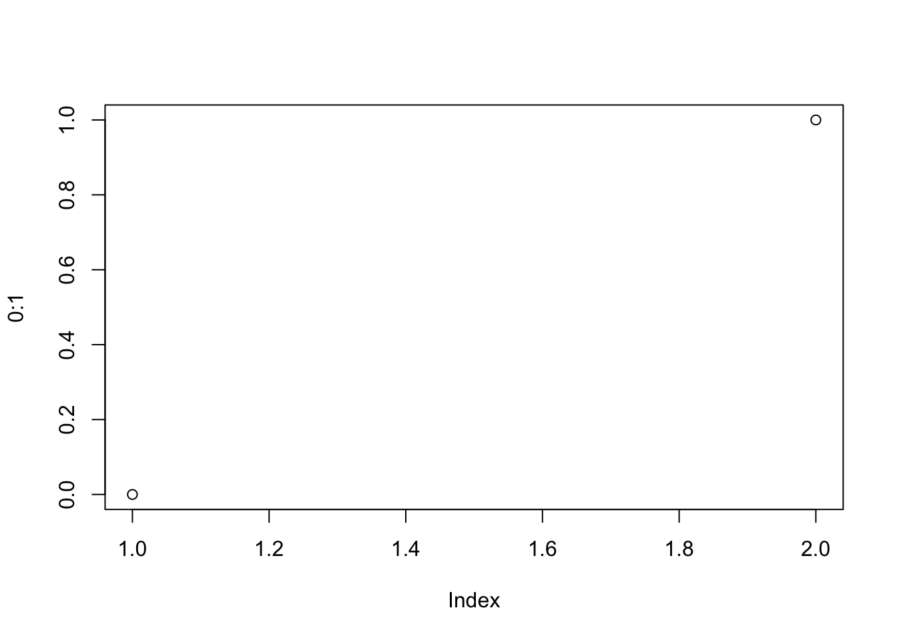
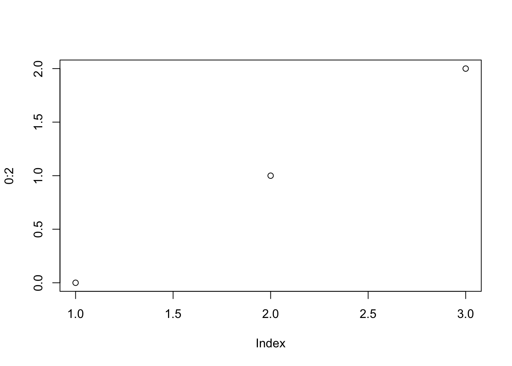
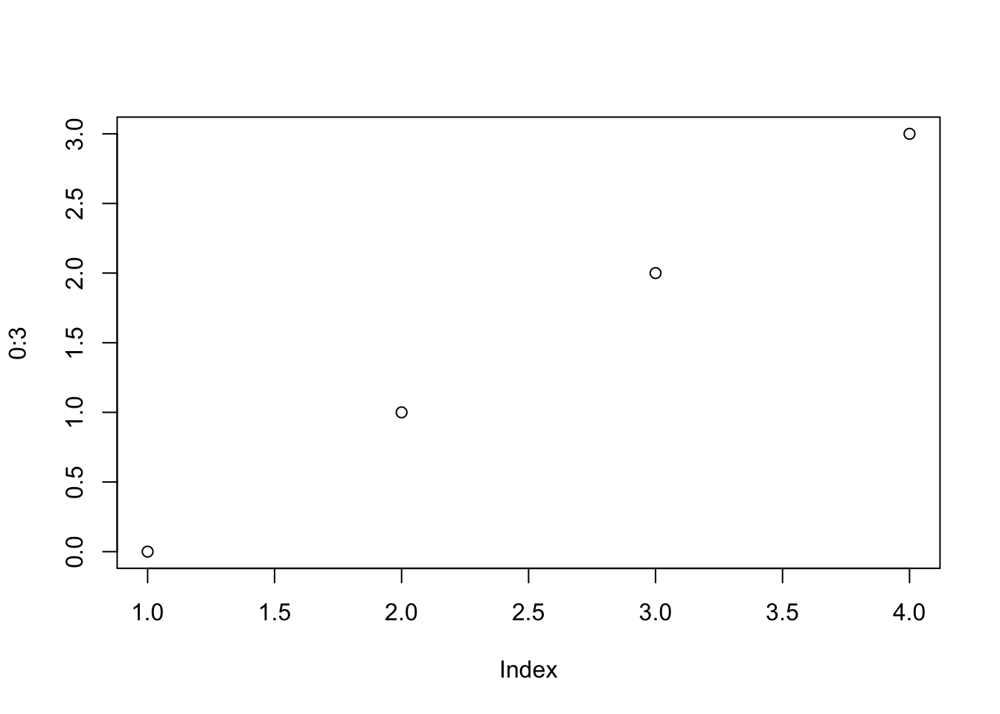
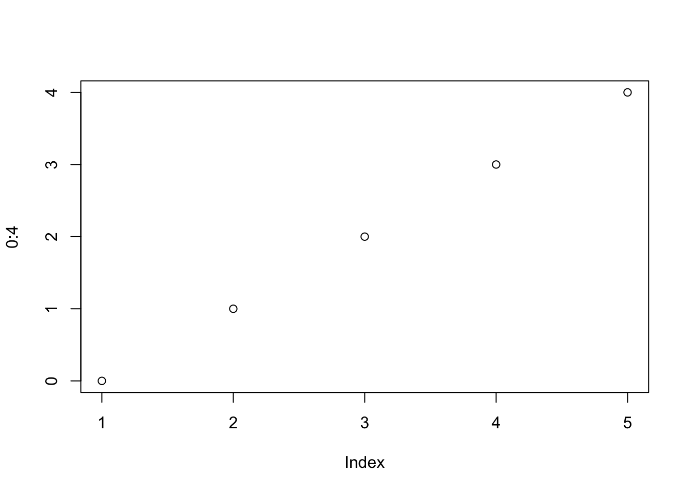

# A tibble: 6 × 10
carat cut color clarity depth table price x y z
<dbl> <ord> <ord> <ord> <dbl> <dbl> <int> <dbl> <dbl> <dbl>
1 0.23 Ideal E SI2 61.5 55 326 3.95 3.98 2.43
2 0.21 Premium E SI1 59.8 61 326 3.89 3.84 2.31
3 0.23 Good E VS1 56.9 65 327 4.05 4.07 2.31
4 0.29 Premium I VS2 62.4 58 334 4.2 4.23 2.63
5 0.31 Good J SI2 63.3 58 335 4.34 4.35 2.75
6 0.24 Very Good J VVS2 62.8 57 336 3.94 3.96 2.48Структуры данных
Вступление
Структура данных — это способ и форма объединения однотипных и/или логически связанных данных.

Датафрейм
Воплощение привычной нам «таблицы» в R.
Это сложная структура данных. Чтобы понять всю её мощь, необходимо начать с более простых.
Векторы
Вектор — это набор чисел.
\[ \pmatrix{1 & 4 & 36 & -8 & 90.1 & -14.5} \]
Если это утверждение вызывает у вас внутренний протест, давай проследим пусть от направленного отрезка в набору чисел.
Возьмем направленный отрезок — вектор:

Именно так мы понимали вектор в школе. Договоримся, что все векторы у нас начинаются из точки \((0, 0)\):

Если теперь у нас все вектора начинаются из начал координат, то мы можем полностью описать вектор только координатами его конца. Поэтому уберем вектор:

То есть для нас теперь вектор равносилен точке на плоскости. А точка однозначно описывается двумя координатами. Получается, можно просто записать:
\[ \pmatrix{1 & 2} \]
Получается, что это одно и то же:
\[ \pmatrix{1 & 0.5}, \quad \pmatrix{2 & 3}, \quad \pmatrix{4.2 & -3.5} \]

Теперь обобщим вектор на более общие случаи:
Вектор — это набор некоторого колчиества элементов одного типа.
v_num <- c(1, 6, -34, 7.7) # числовой вектор
v_char <- c("Москва", "Санкт-Петербург", "Нижний Новгород", "Пермь") # текстовый вектор
v_log <- c(TRUE, FALSE, TRUE, TRUE) # логический векторclass(v_num)[1] "numeric"v_num[1] 1.0 6.0 -34.0 7.7class(v_char)[1] "character"v_char[1] "Москва" "Санкт-Петербург" "Нижний Новгород" "Пермь" class(v_log)[1] "logical"v_log[1] TRUE FALSE TRUE TRUEИндексация векторов
Из вектора можно вытащить его элемент:
v_char[2] # по номеру[1] "Санкт-Петербург"v_num[v_num > 5] # по условию[1] 6.0 7.7Векторизация
Для того, чтобы выполнить операцию на всем векторе поэлементно, не нужно перебирать его элементы.
vec <- 1:4
vec - 1[1] 0 1 2 3vec^2[1] 1 4 9 16sqrt(vec)[1] 1.000000 1.414214 1.732051 2.000000Recycling
Если мы будем, например, складывать два вектора разной длины, то более короткий зациклится.
vec1 <- 1:10
vec2 <- 1:2
vec1 [1] 1 2 3 4 5 6 7 8 9 10vec2[1] 1 2vec1 + vec2 [1] 2 4 4 6 6 8 8 10 10 12Матрицы
Если мы желаем приблизиться к датафрейму, то одного ряда элементов нам недостаточно — надо выходить во второе измерение! Поэтому уложим вектор в матрицу:

Или вот еще разные варианты:
v <- 1:12
m1 <- matrix(v, nrow = 3)
m1 [,1] [,2] [,3] [,4]
[1,] 1 4 7 10
[2,] 2 5 8 11
[3,] 3 6 9 12m2 <- matrix(v, nrow = 4)
m2 [,1] [,2] [,3]
[1,] 1 5 9
[2,] 2 6 10
[3,] 3 7 11
[4,] 4 8 12m3 <- matrix(v, nrow = 3, byrow = TRUE)
m3 [,1] [,2] [,3] [,4]
[1,] 1 2 3 4
[2,] 5 6 7 8
[3,] 9 10 11 12m4 <- matrix(v, nrow = 4, byrow = TRUE)
m4 [,1] [,2] [,3]
[1,] 1 2 3
[2,] 4 5 6
[3,] 7 8 9
[4,] 10 11 12Индексация матриц
Из матрицы можно вытащить её элементы:
m1 [,1] [,2] [,3] [,4]
[1,] 1 4 7 10
[2,] 2 5 8 11
[3,] 3 6 9 12m1[2, 3] # отдельный элемент[1] 8m1[1, ] # целую строку[1] 1 4 7 10m1[, 4] # целый столбец[1] 10 11 12m1[1:2, 2:4] # часть матрицы [,1] [,2] [,3]
[1,] 4 7 10
[2,] 5 8 11Массивы
- Вектор — одномерный массив.
- Матрица — двумерный массив.
- Массивы — структуры, которые объединяют данные только одного типа.
c(2, TRUE)[1] 2 1c(2, TRUE, "word")[1] "2" "TRUE" "word"При объединении разных типов данных в одном массиве происходит приведение типов (coercion) по следующей иерархии:
logical → integer → numeric → complex → character
Это нам осложняет жизнь, так как мы бы хотели объединять данные разных типов в одну структуру.
Списки
Списки позволяют объединять массивы различных типов данных, чем делают нашу жизнь значительно приятнее.

Например, так:
l <- list(v1 = v_num,
v2 = v_char,
m1 = m1,
ls = list(v = v,
m = m3))
l$v1
[1] 1.0 6.0 -34.0 7.7
$v2
[1] "Москва" "Санкт-Петербург" "Нижний Новгород" "Пермь"
$m1
[,1] [,2] [,3] [,4]
[1,] 1 4 7 10
[2,] 2 5 8 11
[3,] 3 6 9 12
$ls
$ls$v
[1] 1 2 3 4 5 6 7 8 9 10 11 12
$ls$m
[,1] [,2] [,3] [,4]
[1,] 1 2 3 4
[2,] 5 6 7 8
[3,] 9 10 11 12Индексация списков
l[1] # по номеру элемента, возвращается список$v1
[1] 1.0 6.0 -34.0 7.7l[[1]] # по номеру элемента, возвращается массив[1] 1.0 6.0 -34.0 7.7l$ls # по названию элемента$v
[1] 1 2 3 4 5 6 7 8 9 10 11 12
$m
[,1] [,2] [,3] [,4]
[1,] 1 2 3 4
[2,] 5 6 7 8
[3,] 9 10 11 12l$ls$m # можно идти многоуровнево [,1] [,2] [,3] [,4]
[1,] 1 2 3 4
[2,] 5 6 7 8
[3,] 9 10 11 12Собираем датафрейм
- возьмем список
- потребуем, чтобы его элементами были векторы
- потребуем, чтобы эти векторы были одинаковой длины
- расположим их «вертикально»

Индексация датафрейма
Для примера возьмем датафрейм про бриллианты:
diam# A tibble: 6 × 10
carat cut color clarity depth table price x y z
<dbl> <ord> <ord> <ord> <dbl> <dbl> <int> <dbl> <dbl> <dbl>
1 0.23 Ideal E SI2 61.5 55 326 3.95 3.98 2.43
2 0.21 Premium E SI1 59.8 61 326 3.89 3.84 2.31
3 0.23 Good E VS1 56.9 65 327 4.05 4.07 2.31
4 0.29 Premium I VS2 62.4 58 334 4.2 4.23 2.63
5 0.31 Good J SI2 63.3 58 335 4.34 4.35 2.75
6 0.24 Very Good J VVS2 62.8 57 336 3.94 3.96 2.48Датафрейм наследует свойства списка и матрицы, что делает его невероятно гибким в обращении и крайне удобным в работе:
diam$carat # вытащить столбец[1] 0.23 0.21 0.23 0.29 0.31 0.24diam[diam$price > 330, ] # отобрать строки по условию# A tibble: 3 × 10
carat cut color clarity depth table price x y z
<dbl> <ord> <ord> <ord> <dbl> <dbl> <int> <dbl> <dbl> <dbl>
1 0.29 Premium I VS2 62.4 58 334 4.2 4.23 2.63
2 0.31 Good J SI2 63.3 58 335 4.34 4.35 2.75
3 0.24 Very Good J VVS2 62.8 57 336 3.94 3.96 2.48diam[, c(2:3, 7)] # вытащить столбцы по номерам# A tibble: 6 × 3
cut color price
<ord> <ord> <int>
1 Ideal E 326
2 Premium E 326
3 Good E 327
4 Premium I 334
5 Good J 335
6 Very Good J 336diam[1:4, c("carat", "price")] # вытащить отдельные строки по номерам и столбцы по названиям# A tibble: 4 × 2
carat price
<dbl> <int>
1 0.23 326
2 0.21 326
3 0.23 327
4 0.29 334— Текст цитаты
— Тоже текст цитаты
Источник цитаты
Год цитаты
Цитата
Заголовок раздела
Тест со ссылкой.
Заголовок подраздела
Тест со ссылкой.
Примеры кода
Чанк без подписи
## подключаем самую лучшую библиотеку
library(tidyverse)
theme_set(theme_bw()) ## устанавливаем тему
head(diamonds)# A tibble: 6 × 10
carat cut color clarity depth table price x y z
<dbl> <ord> <ord> <ord> <dbl> <dbl> <int> <dbl> <dbl> <dbl>
1 0.23 Ideal E SI2 61.5 55 326 3.95 3.98 2.43
2 0.21 Premium E SI1 59.8 61 326 3.89 3.84 2.31
3 0.23 Good E VS1 56.9 65 327 4.05 4.07 2.31
4 0.29 Premium I VS2 62.4 58 334 4.2 4.23 2.63
5 0.31 Good J SI2 63.3 58 335 4.34 4.35 2.75
6 0.24 Very Good J VVS2 62.8 57 336 3.94 3.96 2.48Чанк с подписью
ds <- tibble()
for (i in 1:100) {
if (i %% 2 == 1) {
read_csv(files[i]) %>%
bind_rows(ds) -> ds
} else {
print('a')
stop()
}
}Ссылка на чанк с подписью (?@lst-for-example).
Аннотированный чанк
## большой код для агрегации
1diamonds %>%
2 summarise(mean_price_cut = mean(price),
sd_price_cut = sd(price),
.by = cut) %>%
3 right_join(diamonds, join_by(cut)) %>%
4 mutate(price_group = ifelse(price > mean_price_cut + sd_price_cut, "expensive",
ifelse(price < mean_price_cut - sd_price_cut, "cheap",
"average")))- 1
-
Берем датасет
diamonds, что нарисовать график про бриллианты - 2
- Рассчитываем базовые описательные статистики
- 3
- Объединяем агрегированные данные с исходными
- 4
- Разделяем наблюдения на группы
# A tibble: 53,940 × 13
cut mean_price_cut sd_price_cut carat color clarity depth table price x
<ord> <dbl> <dbl> <dbl> <ord> <ord> <dbl> <dbl> <int> <dbl>
1 Ideal 3458. 3808. 0.23 E SI2 61.5 55 326 3.95
2 Ideal 3458. 3808. 0.23 J VS1 62.8 56 340 3.93
3 Ideal 3458. 3808. 0.31 J SI2 62.2 54 344 4.35
4 Ideal 3458. 3808. 0.3 I SI2 62 54 348 4.31
5 Ideal 3458. 3808. 0.33 I SI2 61.8 55 403 4.49
6 Ideal 3458. 3808. 0.33 I SI2 61.2 56 403 4.49
7 Ideal 3458. 3808. 0.33 J SI1 61.1 56 403 4.49
8 Ideal 3458. 3808. 0.23 G VS1 61.9 54 404 3.93
9 Ideal 3458. 3808. 0.32 I SI1 60.9 55 404 4.45
10 Ideal 3458. 3808. 0.3 I SI2 61 59 405 4.3
# ℹ 53,930 more rows
# ℹ 3 more variables: y <dbl>, z <dbl>, price_group <chr>Примеры иллюстраций
Импорт графического файла
Ссылка на импортированную картинку (Figure 1):

График, построенный с помощью кода
## большой код для графика
1diamonds %>%
2 summarise(mean_price_cut = mean(price),
sd_price_cut = sd(price),
.by = cut) %>%
3 right_join(diamonds, join_by(cut)) %>%
4 mutate(price_group = ifelse(price > mean_price_cut + sd_price_cut, "expensive",
ifelse(price < mean_price_cut - sd_price_cut, "cheap",
"average"))) %>%
5 ggplot(aes(clarity, price,
shape = price_group, color = color)) +
stat_summary(geom = "pointrange",
fun.data = mean_cl_boot,
position = position_dodge(.3)) +
scale_shape_manual(values = c(21, 22, 23)) +
theme(legend.position = "bottom")- 1
-
Берем датасет
diamonds, что нарисовать график про бриллианты - 2
- Рассчитываем базовые описательные статистики
- 3
- Объединяем агрегированные данные с исходными
- 4
- Разделяем наблюдения на группы
- 5
- Начинаем рисовать

Несколько изображений в одной иллюстрации




plot(0:1) -> plot1
plot(0:2) -> plot2
plot(0:3) -> plot3
plot(0:4) -> plot4
print(plot1)
print(plot2)
print(plot3)
print(plot4)NULLNULLNULLNULLКарта
Ссылка неа карту (Figure 5).
Видео
Ссылка на видео (Figure 6).
Схема
flowchart LR A(Step 1) --> B(Step 2) B --> C(Step 3) C --> D(Step 4) D --> E(Step 5) E --> A
Ссылка на схему (Figure 7).
Таблицы
Ссылка на таблицу из tibble (Table 1).
Ссылка на таблицу из R Markdown (Table 2).
Таблица из kable()
| A | B |
|---|---|
| 1 | akjsfv |
| 2 | akejrhvae |
| 3 | kvuhaefrv |
Таблица из R Markdown
| A | B | C | D |
|---|---|---|---|
| 1 | abc | да | \(\sin (2)\) |
| 2 | def | нет | \(\sqrt {4+2i}\) |
| 3 | ghi | да | \(e^{i\pi} + 1 = 0\) |
Математика
Это уравнение прямой (Equation 1):
\[ y = kx + b \tag{1}\]
Theorem 1 Это теорема.
Proof. Это доказательство.
\[ X_1, X_2, \dots , X_n \overset{\text{i.i.d.}}{\thicksim} (\mu, \sigma^2) \]
Lemma 1 Это лемма.
Corollary 1 Это следствие.
Proposition 1 Это утверждение.
Conjecture 1 Это conjecutre.
Definition 1 Это определение.
Example 1 Это пример.
Exercise 1 Это задание.
Solution.
Это решение
Solution.
print(0)[1] 0Remark. Это замечание.
Блоки
Заголовок заметки
Текст заметки.
Заголовок лайфхака
Текст лайфхака.
Заголовок предупреждения
Текст предупреждения.
Заголовок важности
Текст важности.
Заголовок предупреждения
Текст предупреждения.